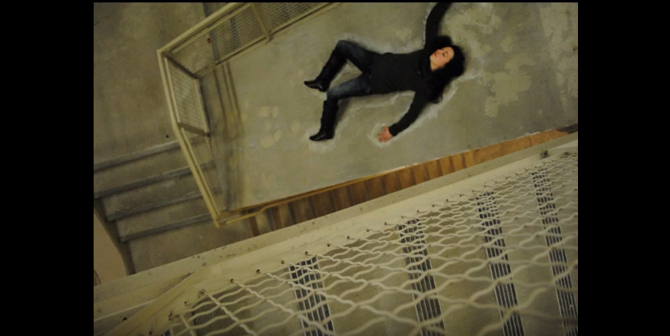

"New Shoes"

Resume
- Norwalk Community College | Class of 2012
- Major: Communications
- Concentration: Media Studies, Televsion Production
- Recipient of Women of Distinction and Promise award
- Nominated for 6 Academic Video Awards, Recipient of 2 Academic Video Awards
- Regarded as professional and pleasure to work with
- University of Connecticut - Stamford | Class of 2016
- Major: Digital Media and Design
- Conentration: 2D/3D Animation, Motion Graphics
- Recipient of the Digital Media and Design departmental award
- Regarded as thoughtful, natural leader, diligent, and honest
- Strengths
- Communication
- Video Shooting and Editing